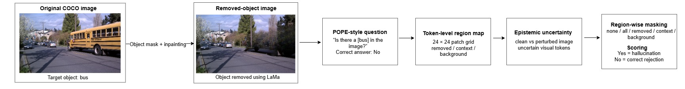
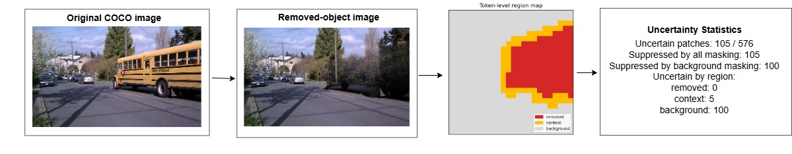
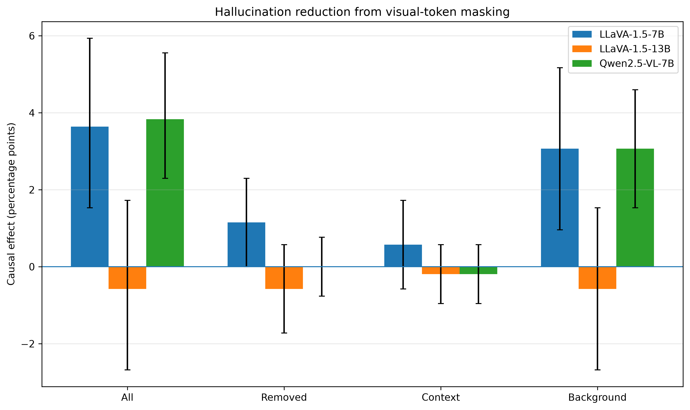
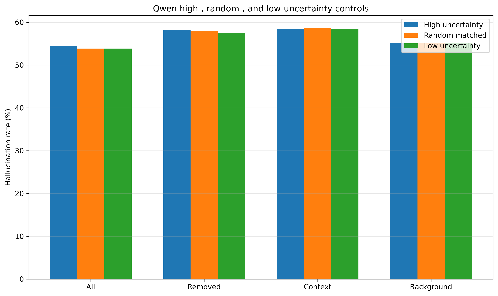
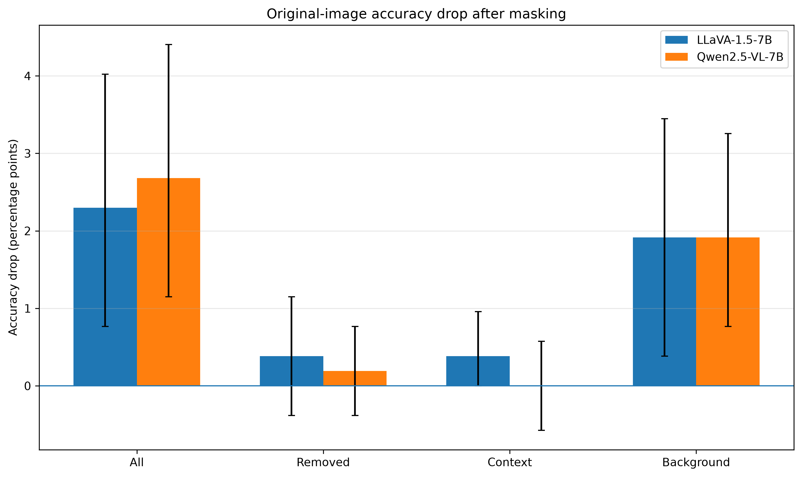

Removed region
Does uncertainty at the original object location directly drive the hallucinated answer?
Research Project · Large Vision-Language Models
A causal intervention framework for understanding which visual regions influence object hallucination in LLaVA and Qwen2.5-VL.
● Three-model causal evaluation
Research Question
When an object is removed, hallucination may be driven by residual evidence near the object, nearby context, or broader scene-level cues.
Does uncertainty at the original object location directly drive the hallucinated answer?
Do nearby objects and local structure reinforce the absent object's presence?
Do global scene priors and co-occurrence cues bias the model toward confirming the removed object?
Method
The pipeline combines controlled counterfactual images, semantic regions, representation-space perturbations, uncertainty, and region-specific masking.

One object is removed from each COCO image using LaMa.
Pixels are aligned with fixed LLaVA patches or dynamic Qwen merged tokens.
Clean and adversarial visual representations identify unstable tokens.
None, all, removed, context, and background interventions are evaluated.

LLaVA-1.5-7B
LLaVA-1.5-13B
Qwen2.5-VL-7B
Main Results
Positive effects indicate hallucination reduction relative to each model's no-masking baseline.

LLaVA-1.5-7B
+3.64 ppGlobal maskingBackground: +3.07 ppLLaVA-1.5-13B
−0.57 ppGlobal maskingNo reliable improvementQwen2.5-VL-7B
+3.83 ppGlobal maskingBackground: +3.07 pp| Model | Baseline | All | Removed | Context | Background |
|---|---|---|---|---|---|
| LLaVA-1.5-7B | 79.50% | +3.64 | +1.15 | +0.57 | +3.07 |
| LLaVA-1.5-13B | 88.70% | −0.57 | −0.57 | −0.19 | −0.57 |
| Qwen2.5-VL-7B | 58.24% | +3.83 | 0.00 | −0.19 | +3.07 |
Effects are percentage points.
Controls
Matched random and low-uncertainty controls separate uncertainty ranking from general information removal.

Randomly suppressing the same number of tokens often produces a similar effect.
LLaVA-7B differs from low-uncertainty masking, while Qwen does not.
Removed and context effects remain weak even when suppression is active.
Recognition Trade-off
Global and background masking also reduce correct recognition when the queried object is present.

Central Takeaway
Key Findings
These interventions are strongest in two distinct 7B backends.
LLaVA-1.5-13B does not reproduce the positive effect.
Random and low-uncertainty controls explain part of the gain.
Aggressive masking removes useful visual evidence.
Citation
@misc{alemadasathish2026regionwise,
title = {Region-wise Causal Analysis of Epistemic Visual Uncertainty for Object Hallucination in Large Vision-Language Models},
author = {Payal Thangamma Alemada Sathish},
year = {2026},
url = https://github.com/PayalThangamma/region-vlm-uncertainty/
}